"Mỗi cây nến Nhật không đơn thuần là 4 mức giá Open - High - Low - Close. Đó là một chiến trường tâm lý thu nhỏ, ghi lại toàn bộ sự thắng bại giữa phe Bò (Mua) và phe Gấu (Bán) trong một khoảng thời gian."
— Steve Nison (Tác giả cuốn 'Japanese Candlestick Charting Techniques')
Trọng Tâm Kiến Thức Của Bài 2
- Cấu tạo nến Nhật OHLC: Giải mã 4 mức giá Mở cửa, Cao nhất, Thấp nhất, Đóng cửa, Thân nến (Spread) và Bóng nến (Shadows).
- Bộ nến đơn lẻ quan trọng nhất: Marubozu (Nến cường lực), Spinning Top (Nến xoay), Hammer (Nến búa), Inverted Hammer (Búa ngược), Hanging Man (Người treo cổ), Shooting Star (Sao băng), và Bộ Nến Doji.
- Các mô hình tổ hợp nến đảo chiều kinh điển: Engulfing (Nhấn chìm tăng / giảm), Morning Star (Sao mai), Evening Star (Sao hôm).
- Hình ảnh minh họa thực chiến: Kèm sơ đồ cấu trúc và biểu đồ ứng dụng điểm vào lệnh thực tế cho từng mẫu nến.
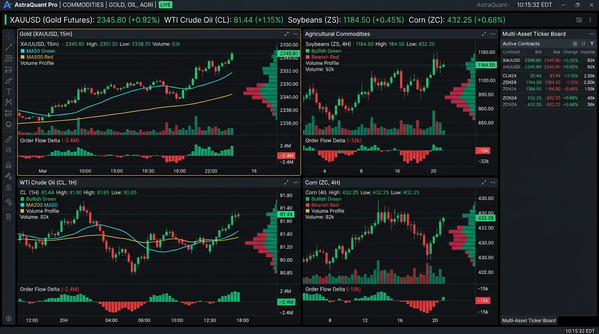
I. NGUỒN GỐC & CẤU TRÚC 4 MỨC GIÁ CỦA NẾN NHẬT (OHLC)
Đồ thị nến Nhật được hình thành từ những năm 1600 bởi thương gia buôn gạo huyền thoại Munehisa Homma tại Nhật Bản dùng để phân tích và dự đoán giá gạo. Sau đó, chuyên gia phân tích Steve Nison được xem là người có công lớn nhất trong việc phổ biến đồ thị nến ra toàn thế giới qua cuốn sách kinh điển Japanese Candlestick Charting Techniques.
1. Cấu trúc 4 mức giá tạo nên một cây nến (OHLC):
- Open (Giá mở cửa): Mức giá giao dịch đầu tiên khi cây nến bắt đầu hình thành.
- High (Giá cao nhất): Mức giá đỉnh cao nhất mà phe Mua đẩy lên được trong suốt phiên.
- Low (Giá thấp nhất): Mức giá đáy thấp nhất mà phe Bán ép xuống được trong phiên.
- Close (Giá đóng cửa): Mức giá giao dịch cuối cùng trước khi chuyển sang cây nến tiếp theo → Đây là mức giá quan trọng nhất quyết định phe nào chiến thắng!
Thân nến (Real Body): Khoảng cách giữa Giá mở cửa và Giá đóng cửa.
• Nến Xanh (Tăng giá): Giá đóng cửa > Giá mở cửa → Phe Mua giành quyền kiểm soát.
• Nến Đỏ (Giảm giá): Giá đóng cửa < Giá mở cửa → Phe Bán chiếm ưu thế áp đảo.
Bóng nến / Râu nến (Shadow / Wick / Tail): Phần que nhô ra ở đỉnh hoặc đáy nến, thể hiện Sự Từ Chối Mức Giá (Price Rejection). Râu nến càng dài chứng tỏ phe đối lập đã phản công cực kỳ mãnh liệt.

II. CÁC LOẠI NẾN ĐƠN LẺ QUAN TRỌNG NHẤT
1. Nến Cường Lực (Marubozu)
Nến Marubozu có thân rất dài, đặc ruột, hoàn toàn không có bóng nến (hoặc bóng nến cực kỳ ngắn). Thể hiện một phe hoàn toàn áp đảo kiểm soát trận đấu từ đầu đến cuối phiên.
- Marubozu Tăng (Xanh): Giá mở cửa = Giá thấp nhất, Giá đóng cửa = Giá cao nhất. Phe Mua dồn toàn lực đẩy giá tăng phi mã.
- Marubozu Giảm (Đỏ): Giá mở cửa = Giá cao nhất, Giá đóng cửa = Giá thấp nhất. Phe Bán xả hàng dứt khoát không hề có sự kháng cự.
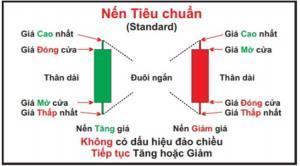
Hình thái nến Marubozu Tăng & Giảm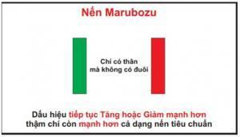
Ứng dụng Marubozu bứt phá cản tiếp diễn sóng2. Nến Xoay (Spinning Top / Con Quay)
Nến có **thân nhỏ** nằm ở giữa và **hai bóng nến trên/dưới dài tương đương nhau**. Thể hiện sự giằng co, lưỡng lự quyết liệt giữa phe Mua và phe Bán nhưng chưa bên nào giành được chiến thắng cuối cùng.
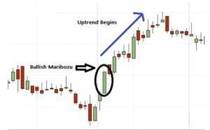
Nến Spinning Top: Thân hẹp, hai bóng dài cân bằng3. Nến Búa (Hammer) & Nến Búa Ngược (Inverted Hammer)
Đây là 2 mẫu nến bắt đáy đảo chiều tăng giá cực kỳ nổi tiếng xuất hiện ở cuối một con sóng giảm:
- Nến Búa (Hammer): Thân nến nhỏ ở đỉnh, bóng dưới rất dài (gấp ít nhất 2 đến 3 lần thân), hầu như không có bóng trên. Phe Bán dìm giá sâu nhưng phe Mua nhảy vào hấp thụ toàn bộ lực bán và đẩy giá đóng cửa sát đỉnh.
- Nến Búa Ngược (Inverted Hammer): Thân nến nhỏ ở đáy, bóng trên rất dài. Phe Mua đã bắt đầu xuất kích thử sức đẩy giá lên cao, báo hiệu phe Bán đã bắt đầu suy yếu.
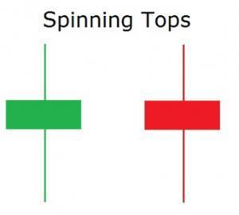
Nến Búa (Hammer) rút chân đáy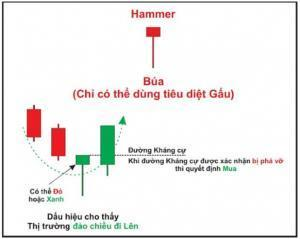
Nến Búa Ngược (Inverted Hammer)4. Nến Người Treo Cổ (Hanging Man) & Nến Sao Băng (Shooting Star)
Đây là 2 mẫu nến bắt đỉnh đảo chiều giảm giá xuất hiện ở cuối một con sóng tăng:
- Nến Người Treo Cổ (Hanging Man): Hình dáng giống nến Hammer nhưng xuất hiện ở **Đỉnh xu hướng tăng**. Bóng dưới dài chứng tỏ áp lực bán tháo bất ngờ xuất hiện trong phiên.
- Nến Sao Băng (Shooting Star): Thân nến nhỏ ở đáy, **bóng trên rất dài**. Phe Mua cố đẩy giá lên đỉnh cao mới nhưng bị phe Bán dội gáo nước lạnh xả hàng ào ạt dìm giá về sát đáy phiên. Tín hiệu Bán khống cực mạnh tại vùng Kháng cự!
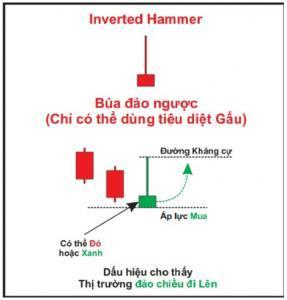
Nến Hanging Man tại đỉnh sóng tăng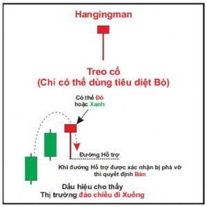
Nến Shooting Star (Từ chối giá tại đỉnh)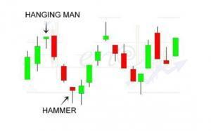
Biểu đồ thực tế: Kích hoạt lệnh Bán khi xuất hiện Shooting Star tại Kháng cự5. Các Loại Nến Doji Quan Trọng
Nến Doji có giá mở cửa và đóng cửa **gần như trùng khớp hoàn toàn**, nến trông giống hình dấu cộng (+). Thể hiện sự giằng co và cảnh báo xu hướng hiện tại đã cạn kiệt năng lượng:
- Standard Doji (Doji Tiêu Chuẩn): Bóng trên và bóng dưới ngắn, thể hiện sự lưỡng lự tạm thời.
- Long-legged Doji (Doji Chân Dài): Bóng trên và bóng dưới rất dài, thể hiện thị trường vừa trải qua một đợt tranh chấp dữ dội.
- Dragonfly Doji (Doji Chuồn Chuồn): Bóng dưới rất dài, không có bóng trên. Giá mở cửa, cao nhất và đóng cửa bằng nhau ở đỉnh → Tín hiệu đảo chiều tăng giá mạnh tại đáy!
- Gravestone Doji (Doji Bia Mộ): Bóng trên rất dài, không có bóng dưới. Giá mở cửa, thấp nhất và đóng cửa bằng nhau ở đáy → Tín hiệu đảo chiều sập giá mạnh tại đỉnh!
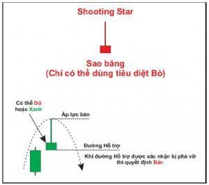
4 Dạng nến Doji thường gặp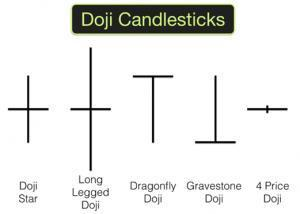
Dragonfly Doji (Chuồn chuồn) & Gravestone Doji (Bia mộ)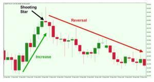
Biểu đồ thực tế: Điểm đảo chiều xu hướng khi cụm Doji xuất hiệnIII. BỘ CỤM NẾN TỔ HỢP ĐẢO CHIỀU KINH ĐIỂN
1. Cụm Nến Nhấn Chìm Tăng (Bullish Engulfing) & Giảm (Bearish Engulfing)
Gồm bộ 2 cây nến: Cây nến thứ 2 có thân lớn **nuốt trọn toàn bộ thân cây nến thứ nhất**.
- Bullish Engulfing (Nhấn chìm tăng): Cây nến xanh lớn bao trùm toàn bộ nến đỏ trước đó tại vùng đáy hỗ trợ → Phe Mua quay lại áp đảo hoàn toàn.
- Bearish Engulfing (Nhấn chìm giảm): Cây nến đỏ lớn nuốt chửng nến xanh trước đó tại vùng đỉnh kháng cự → Phe Bán dội áp lực xả hàng quyết liệt.
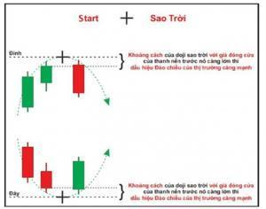
Cấu trúc Bullish / Bearish Engulfing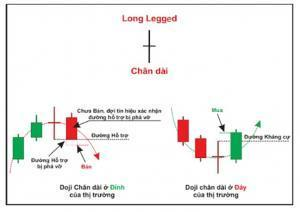
Biểu đồ thực tế: Điểm vào lệnh khi nến Engulfing nuốt trọn nến trước2. Cụm Nến Sao Mai (Morning Star) & Sao Hôm (Evening Star)
Bộ 3 cây nến tinh hoa có độ tin cậy đảo chiều thuộc hàng cao nhất:
- Morning Star (Sao Mai - Đáy → Tăng): Nến 1 giảm mạnh → Nến 2 thân nhỏ hoặc Doji (ngừng đà rơi) → Nến 3 tăng mạnh đóng cửa vượt quá 50% thân nến 1.
- Evening Star (Sao Hôm - Đỉnh → Giảm): Nến 1 tăng mạnh → Nến 2 thân nhỏ hoặc Doji (chững lại đà tăng) → Nến 3 giảm mạnh xé toạc đà tăng trước đó.
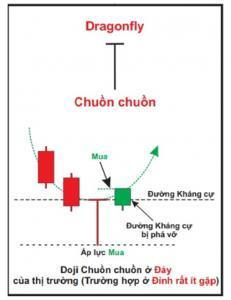
Cấu trúc Morning Star & Evening Star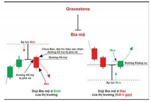
Biểu đồ thực tế: Điểm Mua tại đáy khi cụm Sao Mai hoàn thànhIV. BÍ QUYẾT ĐỌC NẾN KẾT HỢP KHỐI LƯỢNG VSA (VOLUME SPREAD ANALYSIS)
| Hình Thái Nến (Spread) | Khối Lượng (Volume) | Đọc Vị Bản Chất Dòng Tiền (Smart Money) |
|---|---|---|
| Nến thân dài (Marubozu tăng) | Rất Cao (Ultra High Vol) | Đẩy giá thật (True Breakout): Nỗ lực mua đi kèm kết quả tăng giá tương xứng. Xu hướng tăng rất vững chắc. |
| Nến thân rất hẹp (Doji / Nến nhỏ) | Đột Biến Rất Cao | Bất thường (Anomalies / Bẫy): Nỗ lực cực lớn nhưng giá không tăng nổi chứng tỏ Smart Money đang âm thầm xả hàng chặn giá (Absorption / Climax). Cảnh báo đảo chiều sập giá! |
| Nến rút chân Pin Bar | Thấp (Low Volume) | Kiểm định cạn cung (Test Supply): Phe bán đã cạn kiệt hàng, dọn đường cho phe mua dễ dàng đẩy giá bốc đầu. |
Tổng Kết & Chuẩn Bị Cho Bài 3
Nến Nhật cung cấp tín hiệu kích hoạt (Trigger). Tuy nhiên, một cây nến Pin Bar hay Engulfing đẹp đến mấy cũng sẽ vô nghĩa nếu nó xuất hiện lơ lửng ở giữa khoảng trống. Trong bài học tiếp theo, chúng ta sẽ học cách gắn nến vào các vùng cản then chốt: Bài 3: Kháng Cự & Hỗ Trợ – Bản Đồ Tác Chiến Của Mọi Trader!
Thảo Luận Bài Học Nến Nhật (2)